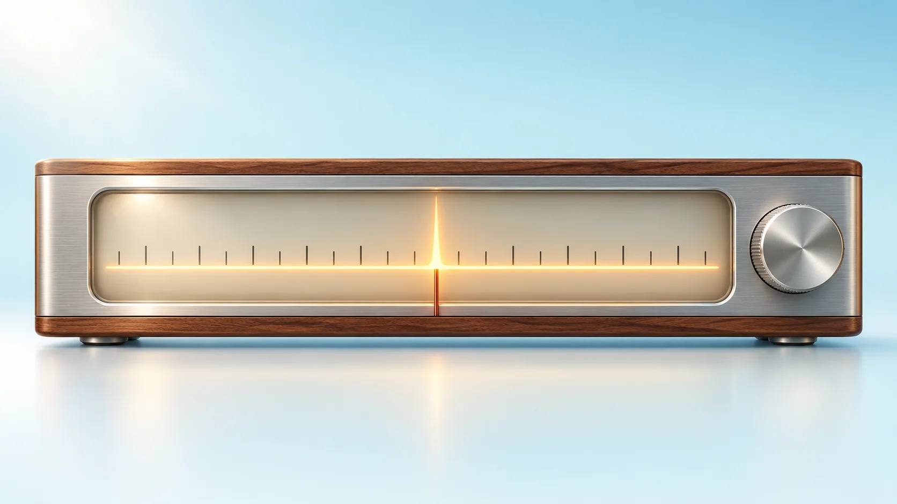
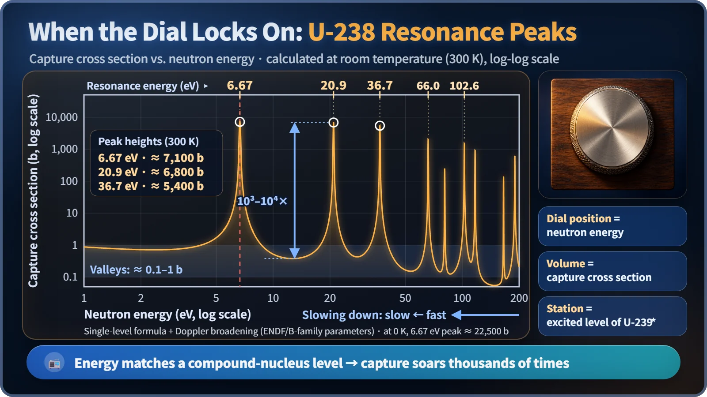
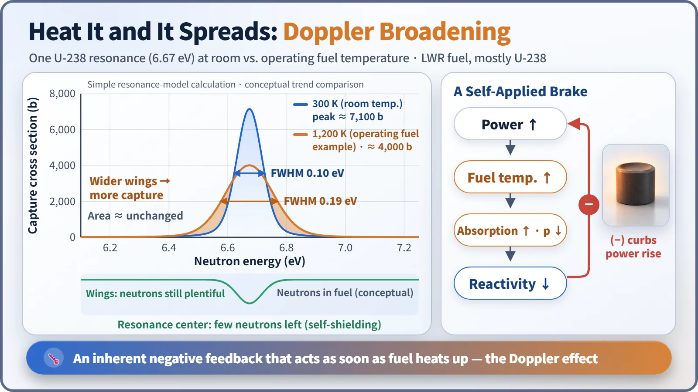

Nuclear Reactions & Fission · 040
Locking On Like a Radio Dial — Why Resonance Absorption Matters in a Reactor
At certain energies uranium-238 captures neutrons thousands of times more readily. That costs neutrons, but it also gives reactors a built-in temperature brake.

When a neutron's energy exactly matches an energy level of the compound nucleus, uranium-238's capture cross section leaps thousands to tens of thousands of times above its usual value. These resonances steal neutrons as they slow down, but because they broaden as fuel heats up, they also give reactors an automatic, physics-based brake. [1]
Locking on like a radio dial
Remember the tuning dial on an old radio? Turn the knob slowly and for a long while all you get is static. Then, at one exact spot, music bursts through, crisp and clear. Go a hair too far and it's static again. The sound jumps only at the moment the receiver matches the station's frequency.
Atomic nuclei play this same tuning game with neutrons. It is called resonance absorption.
Peaks that leap out of the static
A cross section is the likelihood that a neutron reacts with a nucleus, expressed as a target area in barns (b). For the most part it changes gently with neutron energy. But spread out the graph for uranium-238, and needle-sharp peaks shoot up above that gentle floor.

In the valleys between resonances, uranium-238's capture cross section is roughly 0.1 to 1 b. At the first peak, 6.67 eV, it is about 7,000 b even at room temperature, and an idealized calculation with perfectly motionless nuclei gives more than 20,000 b: thousands to tens of thousands of times higher than the valleys. Similar peaks line up at 20.9 eV, 36.7 eV and 66.0 eV, and hundreds of them continue from a few eV up to thousands of eV. Peak heights here are simple-model calculations and can differ by a few to more than ten percent depending on the nuclear data library and method. [3]
Why those energies? The stations inside the nucleus
When a neutron enters uranium-238, it briefly forms an excited nucleus holding one extra neutron, called a compound nucleus. The excitation energies this compound nucleus can have are fixed at spaced-out steps, like a staircase. When the energy a neutron brings in matches one of those steps exactly, the reaction probability skyrockets.
| Radio | Nucleus |
|---|---|
| Dial position | Neutron energy |
| Volume | Capture cross section |
| Station frequency | Energy level of the compound nucleus (U-239*) |
Neutrons caught in a uranium-238 resonance mostly do not cause fission. The excited nucleus sends out a gamma ray and quietly settles down, a process called capture. From the chain reaction's point of view, one neutron has simply vanished. [2] [4]
A trap on the road to slowing down
Neutrons born in fission start out at about 2 MeV on average and must collide over and over with water, the moderator, to come down to slow thermal neutrons of around 0.025 eV before they can split uranium-235 effectively. Right in the middle of that downhill road, the resonance peaks lie scattered like a minefield. Light-water reactor fuel is only a few percent uranium-235, with more than 95% uranium-238, so the traps vastly outnumber everything else.
The fraction of neutrons that make it safely through is the resonance escape probability, p. In a light-water reactor it is roughly 0.7 to 0.8, so about one in every four or five slowing neutrons is caught in a resonance. That makes p an essential term in the neutron balance of a chain reaction. [1]
Why fuel is bundled into rods
Instead of mixing fuel and moderator evenly, reactors gather the fuel into slender rods and fill the space between them with water. Neutrons then do most of their slowing down in the water. Even if a neutron tuned to a resonance energy enters a fuel rod, the uranium-238 in the rod's outer layer grabs it first, leaving the inside in a kind of shadow (self-shielding). The first reactor to run on natural uranium alone, Chicago Pile-1 in 1942, relied on exactly this principle, with lumps of uranium set in graphite in a lattice pattern.
Heat it up and the peaks spread: Doppler broadening
When fuel heats up, the uranium-238 nuclei jiggle more vigorously in place. The relative energy between neutron and nucleus becomes more scattered, so each resonance peak gets lower but wider. This is Doppler broadening.

In a simple-model calculation, the 6.67 eV peak is about 7,000 b high and about 0.1 eV wide at room temperature (300 K), and about 4,000 b high and about 0.19 eV wide at 1,200 K, roughly the temperature of fuel in an operating reactor. The area under the peak stays almost the same.
A lower peak sounds like less absorption, but in real fuel it is the opposite. Because of self-shielding, neutrons near the top of the peak were already being caught almost entirely at the fuel surface. Lowering the top costs very little, while the wider wings snag neutrons across a broader band of energies. [2]
That creates a chain: power ↑ → fuel temperature ↑ → resonance absorption ↑ → reactivity ↓ → power ↓. Because it responds to the temperature of the fuel itself, there is almost no delay, and it works by physics alone, with no operator or mechanical device involved. This negative fuel temperature coefficient, or Doppler coefficient, is one of a reactor's signature inherent safety features.
Key takeaways
Resonance absorption makes absorption shoot up thousands of times or more when a neutron's energy matches an energy level of the compound nucleus. It is a loss that steals neutrons during slowing down, reduced by arranging fuel in rods, and at the same time the source of a safeguard that automatically holds power down when temperature rises.